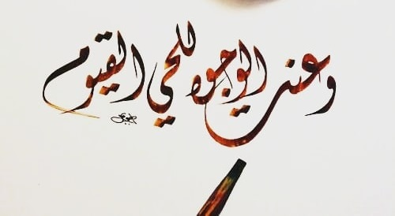
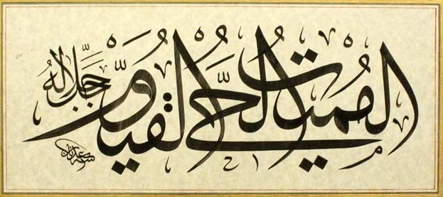

Hayat veren bu isimler üç âyette yan yana geçiyor: 
Birinci isim el-Hayy bizzat "hayatın kaynağı"...
20:111
ve'anetil-vucûhu lil-hayyil-qayyûm
Yüzler, Hayy ve Kayyum olan Allah'a baş eğmiştir
İkinci isim, modern dildeki anlam kayması nedeniyle, biraz karmaşık:
Sözlükte “doğrulup ayakta durmak, devam ve sebat etmek, bir işin idaresini üzerine almak, gözetip korumak” anlamındaki kıyâm kökünden mübalağa ifade eden bir sıfat olup “her şeyin varlığı kendisine bağlı olan, kâinatı idare eden” demektir. Kıyâm kökünün ifade ettiği mânaların ilki maddî ve yaratılmışlık unsurları taşıdığından Allah’a nisbet edilmemekte, diğerleri ise ulûhiyyet makamına yakışacak bir muhteva çerçevesinde kayyûm ismi içinde mütalaa edilmektedir. Aynı kökten türeyen kāim sıfatı iki yerde, makām ve kayyûm da üçer âyette Allah’a izâfe edilmiştir.
Kaynak: İslam Ansiklopedisi
Vahdet ile ilişkisini Âyetul-kursî tanımlıyor:
2:255
allâhu lâ ilâhe illâ huvel-hayyul-kayyûm
Allah (ki) O'ndan başka ilah yoktur. Diridir, hayatı elinde tutandır.
Aynı ifadeyi Âl-i İmran Suresinin başında okuyoruz:
3:2
allâhu lâ ilâhe illâ huvel-hayyul-kayyûm
Allah, ki O'ndan başka tanrı yoktur, daima diri ve yaratıklarını koruyup yöneticidir.
